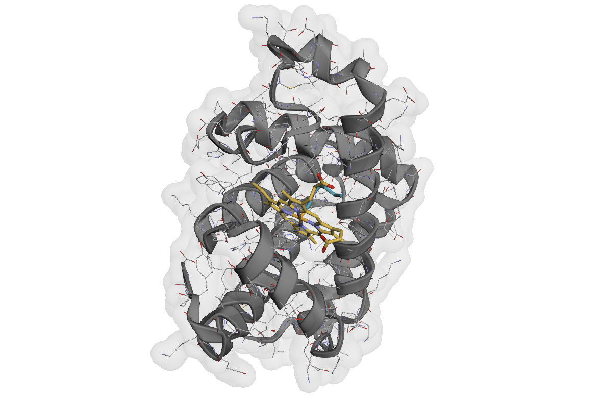

Note
Go to the end to download the full example code.
Loading and Visualizing Protein Structures#
This example demonstrates how to load protein structures from various formats and explore their content using AtomWorks.
{kind=link}

Interactive 3D visualization of myoglobin structure showing protein chains and heme ligand.#
Loading Structures#
AtomWorks provides two main functions for loading structures, each optimized for different scenarios:
parse(): Full processing pipeline that cleans, validates, and processes structures, typically from the RCSB PDB. Includes imputing missing atom, inferring bonds, and extensive validation.load_any(): Lightweight loader for structures that do not require as extensive processing, e.g., distillation examples. Much faster when you don’t need the full cleaning pipeline or missing atoms imputed.
If you see output like Environment variable CCD_MIRROR_PATH or PDB_MIRROR_PATH not set, don’t worry - it just means we aren’t using local copies of the PDB and/or CCD (we can still load the examples we need with an internet connection).
import numpy as np
from atomworks.io import parse
from atomworks.io.utils.io_utils import load_any
from atomworks.io.utils.testing import get_pdb_path_or_buffer
from atomworks.io.utils.visualize import view
# sphinx_gallery_thumbnail_path = '_static/examples/load_and_visualize_structures_01.png'
# Load a myoglobin structure (SPERM WHALE MYOGLOBIN F46V N-BUTYL ISOCYANIDE AT PH 9.0)
example_pdb_id = "101m"
pdb_path = get_pdb_path_or_buffer(example_pdb_id)
Using parse() for Full Processing#
For RCSB structures, we typically load structures with parse() to get clean data suitable for most downstream tasks.
There are many arguments that control how the structure is processed upon parsing; see the API documentation for more detail.
A few are:
- remove_waters: Whether to remove water molecules (True by default)
- remove_ccds: CCD codes to filter out (Default is a list of common crystallization aids, e.g., GOL, SO4, etc.)
- add_missing_atoms: Whether to add missing (e.g., unresolved) heavy atoms (True by default)
- hydrogen_policy: How to handle hydrogens (e.g., “keep”, “remove”, or “infer”). Default is “keep”.
… and many more!
# ``parse`` returns a dictionary with several data fields; see the API docs for full details.
# The loaded assembly information is stored in the "assemblies" key, which we use in the example below.
parse_output = parse(pdb_path)
print("Available data keys:", list(parse_output.keys()))
Using load_any() for Lightweight Loading#
# For comparison: load_any() for lightweight loading (no extensive processing)
# Useful when you have clean data (e.g., from distillation) and/or want to preserve all annotations
loaded_structure = load_any(pdb_path, extra_fields="all") # Load with all available fields
print(f"load_any result type: {type(loaded_structure)}")
print(f"Number of models: {len(loaded_structure)}")
# NOTE: load_any returns an AtomArrayStack directly, while parse returns a dictionary with metadata, chain info, assemblies, etc.
Structure Visualization#
AtomWorks includes built-in 3D visualization capabilities. Let’s extract the biological assembly and explore the structure:
# Extract the biological assembly (first assembly, first model)
atom_array = parse_output["assemblies"]["1"][0]
# Explore available annotations
print("Available annotations:")
annotations = atom_array.get_annotation_categories()
for i, annotation in enumerate(annotations):
print(f" {i+1:2d}. {annotation}")
# Visualize the complete structure within an interactive viewer
view(atom_array)
Understanding Assemblies vs Asymmetric Units#
The RCSB PDB draws a distinction between asymmetric units and biological assemblies; see the RCSB PDB 101 Guide for more information.
The parse() function returns both asymmetric units and biological assemblies. Let’s explore the difference:
# Compare asymmetric unit vs assembly
asym_unit = parse_output["asym_unit"][0] # First model of asymmetric unit
assembly = parse_output["assemblies"]["1"][0] # First model of first assembly
print(f"Asymmetric unit atoms: {len(asym_unit)}")
print(f"Assembly atoms: {len(assembly)}")
print(f"\nFor this structure, they are {'the same' if len(asym_unit) == len(assembly) else 'different'}")
# Show available assemblies
print(f"\nAvailable assemblies: {list(parse_output['assemblies'].keys())}")
Data Exploration#
Let’s now explore the structure composition by examining chains, residues, and other annotations:
# Examine chain composition
unique_chains = np.unique(atom_array.chain_id)
print(f"Chains present: {unique_chains}")
# Analyze what each chain contains
for chain in unique_chains:
chain_mask = atom_array.chain_id == chain
unique_residues = np.unique(atom_array.res_name[chain_mask])
print(f"\nChain {chain}: {len(unique_residues)} unique residue types")
print(f" Examples: {unique_residues[:5]}") # Show first 5 residue types
print(f" Total atoms: {np.sum(chain_mask)}")
Exploring Metadata and Chain Information#
The parse() function also extracts rich metadata about the structure from the RCSB:
# Explore metadata
metadata = parse_output["metadata"]
print("Structure metadata:")
for key, value in metadata.items():
if key != "parse_arguments": # Skip the verbose parse arguments
print(f" {key}: {value}")
# Explore chain information for Chain A
chain_a_info = parse_output["chain_info"].get("A", {})
print("\nChain A information:")
for key, value in chain_a_info.items():
# Show only a preview for long lists or strings
if isinstance(value, str | list):
preview = value[:15]
suffix = "..." if len(value) > 15 else ""
print(f" {key}: '{preview}{suffix}'")
else:
print(f" {key}: {value}")
Accessing the Original mmCIF Data#
If there is information contained in the mmCIF file that is not extracted by parse, we can still gain access
to the original Biotite CIF block using the keep_cif_block=True argument to parse.
We can then use the Biotite API to explore any additional data we might need.
(E.g., we could write a simple Transform that extracts the necessary information)
# Load with original CIF block retained
parse_output_with_cif = parse(pdb_path, keep_cif_block=True)
cif_block = parse_output_with_cif.get("cif_block", None)